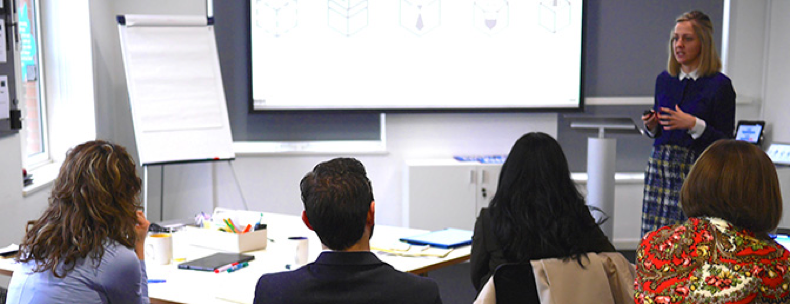

Small teams, big ideas: open data ambition runs from startups to governments

One of the things we do at the Open Data Institute (ODI) is incubate start ups. Start ups, I have learnt in my 12 months working here, usually begin as being just one or two individuals with a good idea. They have some sort of plan to make that idea a reality. They have some manifestation of the entrepreneurial leadership qualities to at least try to make that idea work. They never have enough time, money or people, and they ordinarily start out surrounded by people telling them all the reasons why it won’t succeed.
So when over the course of that year my team and I have found ourselves sitting down with the government leaders driving open data initiatives – in both developed and developing countries – we had the twinge of recognition. Sitting with us were public servants with an idea of what open data could do for their country, some sort of a plan, and the leadership qualities to try to make it work. They also had not enough time, money or people, and have a system full of people telling them all the reasons why it wasn’t going to succeed.
There are of course plenty of differences. Unlike private sector entrepreneurs, public officials need permission to pursue their ideas, and for something new like open data they usually need a strong, high-level mandate. Their leadership qualities usually include the pragmatism and collaboration required to get things changed in bureaucratic systems. Their challenges are not necessarily about business models or pricing models, but (as we recently wrote) involve finding ways to embed change or overcome barriers to resistance and vested interests.
Yet they are, in many ways, entrepreneurs. They need to build teams and structures or institutions and influence many people to succeed. So when many of them individually asked for our support to think through how to design or implement their policies, we decided to figure out a way to support them that drew upon our experience of what works for supporting the startups.
The start ups tell us that where our support adds value for them is our ability to convene, connect, amplify and mentor; and the opportunity to be part of a cohort of peers who tell you that you’re not crazy, and that your idea might just work.
With these insights, and the team’s experience driving change within government and creating supportive learning spaces, we convened an Open Data Leaders’ Network. The idea was to connect peers to exchange ideas, talk about influencing strategy and problem solving, and find and give inspiration and ideas for addressing implementation and consolidation challenges.
The project, supported by the Open Data for Development (OD4D) network (more details below), kicked off last week with a cohort of seven individuals from four continents who each lead the design or implementation of their government’s open data programmes.
They met for five days at ODI’s London offices (see here for details, and the evaluation published as certified open data). The group included leaders from developed and developing countries alike, and the network will continue to develop, and ultimately expand, through an online forum and (their idea) a so-far very active WhatsApp group.
In the final few weeks of pulling the kick-off meeting together, we drew on the thinking emerging from the recently published #AdaptDev project of the Overseas Development Institute. They build on emerging ideas of the need to move beyond copy-paste institutions – or “isomorphic mimicry” to use Lant Pritchett’s coinage – to locally led, problem focused, politically informed, adaptive and entrepreneurial forms of support for achieving international development outcomes.
I'm 30 and I work in a field that did not exist when I finished graduate school. It often feels like open data encapsulates the truism that the world is changing far too quickly to retain any notion that social and economic development occurs in neat stages reflecting a historical path seen in other contexts. Around half of all data in existence was created in the last 2 years. Much of the developing world is leapfrogging from radio to smart phones, bypassing desktops and landlines all together. And bypassing bank accounts for that matter: it is easier to pay for a taxi with a mobile phone in Kenya than it is in New York.
No one had to tell the leaders who gathered at the ODI that the solutions to the challenges their countries faced needed to be led from and built for their particular contexts. They didn’t have to be told that they needed to be flexible and adaptive in delivering their open data programmes, and to stay politically informed in the process.
All of this they knew. But what they wanted from us was more centred around growing their networks and helping them pave the way to create a sustainable open data culture in their countries. They asked specifically that we keep them connected to the latest ideas and evidence to help them craft their strategies; to amplify their successes; and to ensure that they maintained their open data mandates. Crucially, to tell them and the world that their ideas can succeed.
You can find out more about how open data can support sustainable global development in the white papers, tech reports and case studies on our Partnership for Open Data page.
The OD4D network recently merged with the Partnership for Open Data. Read the release here.